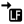

Menú Ver: Duplicar vista
Si hay un archivo fuente abierto, abre una nueva pestaña de edición de código que permite editar el mismo archivo. Obtendrá así varias pestañar para editar el mismo código. Los cambios sobre una se reflejarán inmediatamente sobre las demás, manteniéndose así sincronizadas en todo momento. Esta funcionalidad permite visualizar y editar en simultáneo diferentes partes de un mismo archivo.
 Menú Ver: Ajuste de Linea
Menú Ver: Ajuste de Linea
Activa o desactiva el ajuste de línea. Cuando el ajuste de linea está activado las lineas de código que no entren completas en la pantalla se muestran en más de un renglón, mientras que cuando el ajuste de linea está desactivado dichas lineas no se pueden ver completas, por lo que se debe utilizar la barra de desplazamiento horizontal. El valor por defecto de esta opción puede configurarse en la pestaña Estilo y Asistencias del cuadro de preferencias.
Temas relacionados: Diálogo Preferencias
Menú Ver: Colorear Sintaxis
Activa o desactiva el coloreado de sintaxis. El coloreado de sintaxis facilita la lectura de un código fuente, ya que marca de diferentes colores palabras reservadas, comenarios, directivas de preprocesador, operadores, constantes, etc. El valor por defecto de esta opción puede configurarse en la pestaña Estilo y Asistencias del cuadro de preferencias.

Menú Ver: Mostrar espacios y caracteres de fin de linea
Activa o desactiva la representación especial en el código de algunos caracteres no imprimibles (como el espacio, tabulado, fin de linea, etc).
Menú Ver: Configurar esquema de colores
Abre un cuadro de diálogo que permite cambiar los colores y estilos con que ZinjaI resalta cada componente de un código fuente (palabras reservadas, constantes, comentarios, operadores, constantes, etc) cuando el coloreado de sintaxis está activo. Este cuadro permite elegir un perfil completo (un conjunto de colores y estilos predefinidos), o alterar individualmente solo algunas propiedadas para componer un nuevo perfil personalizado. También puede acceder a este cuadro de diálogo desde la pestaña Estilo y Asistencias del cuadro de preferencias.
Menú Ver: Plegado
Si el plegado de código está habilitado (pestaña Estilo y Asistencias del cuadro de preferencias) permite plegar o desplegar distintos niveles del mismo.
Temas relacionados: Diálogo Preferencias
Menú Ver: Ver a pantalla completa
Oculta las barras de herramientas, los paneles, y el decorado de la ventana, y la máximiza permitiendo así que el área de código ocupe el mayor espacio posible. Sólo permanece visible la barra de menúes. Para salir del modo pantalla completa debe utilizar nuevamente el mismo comando.
Temas relacionados: Panel Arbol de Archivos
Menú Ver: Mostrar panel de mini-plantillas
Muestra u oculta un panel con el que puede insertar fácilmente fragmentos de código comunes, como por ejemplo estructuras de control. Este panel está pensado para asistir a estudiantes o usuarios sin experiencia en C++, que aún no han aprendido o memorizado la sintaxis particular de este lenguaje par cada estructura.
Menú Ver: Mostrar arbol de proyecto
Muestra u oculta el panel del árbol del archivos (o árbol de proyecto). Este panel muestra los archivos abiertos o pertenecientes a un proyecto discriminados en las categorías Fuente, Cabeceras y Otros.
Menú Ver: Mostrar explorador de archivos
Muestra u oculta un panel en donde puede explorar los archivos de un directorio y sus subdirectorios. Este panel, a diferencia del árbol de proyecto, muestra todos los archivos y carpetas del directorio, independientemente de si pertenecen o no al proyecto o si están o no abiertos en ZinjaI, y anidados según su estructura de subdirectorios. Puede configurarse como reemplazo para el árbol de archivos al trabajar con proyectos desde la pestaña "Programa/Proyecto" del diálogo Preferencias.
Menú Ver: Mostrar Arbol de Simbolos
Muestra u oculta el panel del Árbol de Símbolos. Notar que hacerlo visible no implica actualizar inmediatamente su contenido.
Menú Ver: Mostrar Resultados de la Compilación
Muestra u oculta el panel que informa los resulados de una compilación (estado, errores, avisos, etc).
Temas relacionados: Panel Resultados del Compilador, Analisis de la Salida del Compilador
Menú Ver: Barras de herramientas: Mostrar Barra de Herramientas Archivo
Muestra u oculta una barra de herramientas con accesos rápidos a comandos del menú Archivo.
Menú Ver: Barras de herramientas: Mostrar Barra de Herramientas Edicion
Muestra u oculta una barra de herramientas con accesos rápidos a comandos del menú Edicion.
Menú Ver: Barras de herramientas: Mostrar Barra de Herramientas Ver
Muestra u oculta una barra de herramientas con accesos rápidos a comandos del menú Ver.
Menú Ver: Barras de herramientas: Mostrar Barra de Herramientas Ejecucion
Muestra u oculta una barra de herramientas con accesos rápidos a comandos del menú ejecucion.
Menú Ver: Barras de herramientas: Mostrar Barra de Herramientas Herramientas
Muestra u oculta una barra de herramientas con accesos rápidos a comandos del menú Herramientas.
Menú Ver: Barras de herramientas: Mostrar Barra de Herramientas Miscelanea
Muestra u oculta una barra de herramientas con accesos rápidos a comandos varios de los menúes (como por ejemplo Preferencia o Ayuda).
Menú Ver: Barras de herramientas: Mostrar Barra de Herramientas de Busqueda Rapida
Muestra u oculta una barra de herramientas que permite buscar rápida e incrementalmente dentro de fuente. Presenta un cuadro de texto, y va buscanda a medida que el usuario introduce la cadena de texto. Si presiona enter sin modificar la cadena avanza al próximo resultado. Estas búsquedas no son sensibles a mayúsculas y minúsculas.
Menú Ver: Barras de herramientas: Mostrar Barra de Herramientas de Proyecto
Muestra y oculta una barra de herramientas especial que solo se hace visible cuando se trabaja sobre un proyecto, conteniendo accesos directos configurables para herramientas personalizadas específicas del proyecto, y algunos adicionales que agrega ZinjaI cuando se activa la integración de determinadas herramientas externas (por ejemplo, un acceso a la referencia de wxWidgets cuando se activa la integración con wxFormBuilder).
Menú Ver: Barras de herramientas: Mostrar Barra de Herramientas de Depuracion
Muestra u oculta una barra de herramientas con accesos rápidos a comandos del menú Depuracion.
Menú Ver: Barras de herramientas: Configurar....
Abre el cuadro de díalogo de Preferencias, en la pestaña "Barra de Herramientas", la cual permite selecciona cuáles barras de herramientas serán visibles, en qué márgen de la ventana principal se acoplarán, el tamaño de sus íconos, y qué ítems deberá presentar cada una.